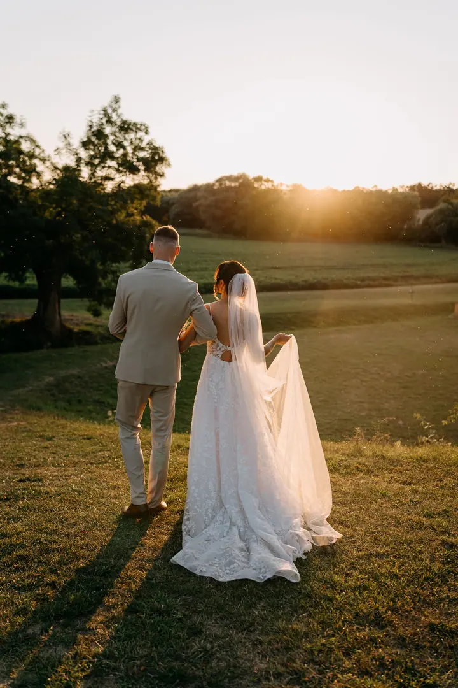
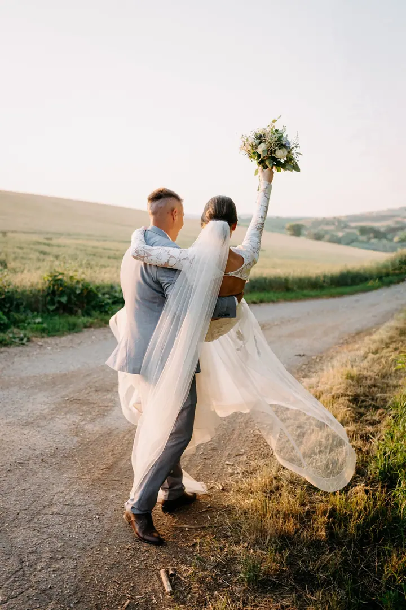
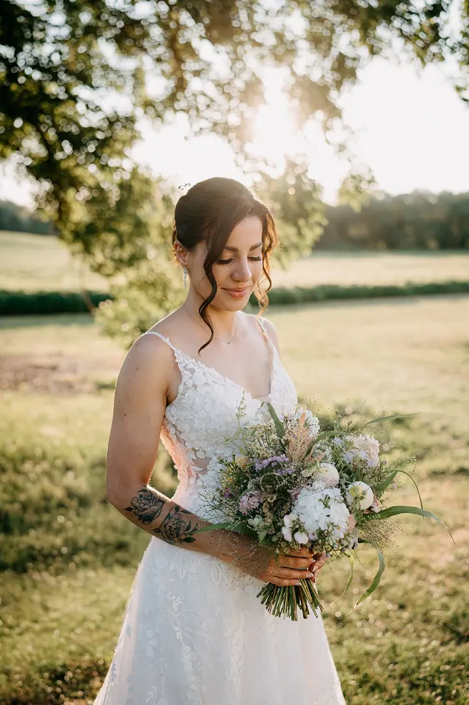
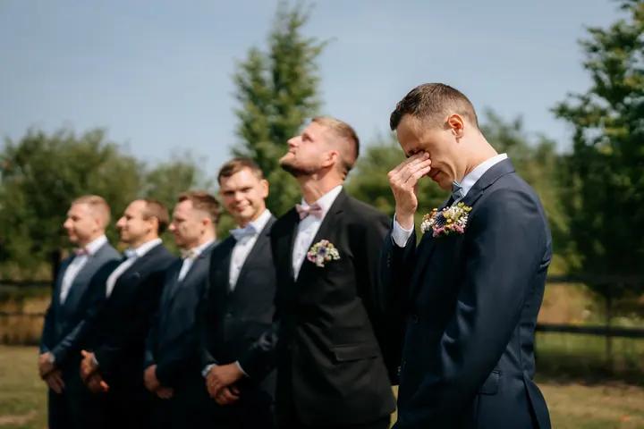
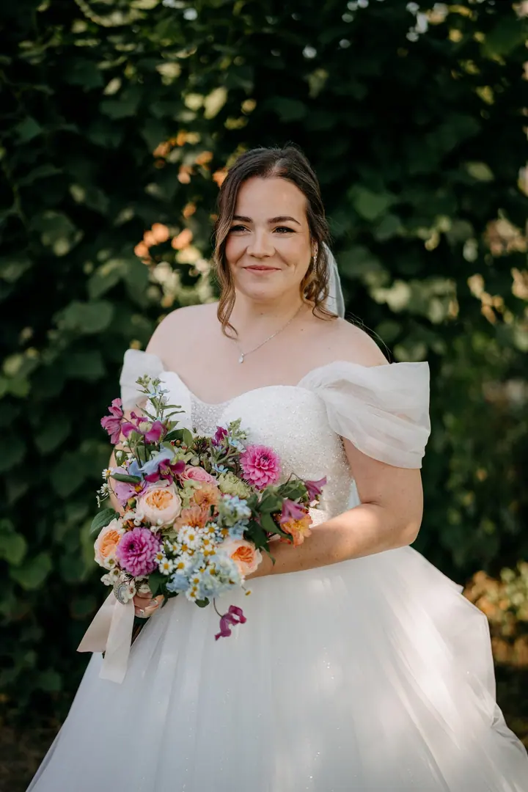

jedna
Svatební focení
Fotím váš den přirozeně a autenticky, tak jak ho skutečně prožíváte, bez strojených póz a nátlaku. Vybrat si můžete ze tří balíčků (MINI, STANDARD, KOMPLET), svatební focení začíná od 12 000 Kč.

Svatební a rodinná fotografka · Brno, Břeclav, jižní Morava

Jmenuji se Markéta Košťálová a jsem svatební a rodinná fotografka z Brna. Fotím svatby, páry, rodiny i nastávající maminky, vždy přirozeně a bez krkolomných póz. Chci, abyste se k fotkám s radostí vraceli i za dvacet let.
Více o mně
Co fotím
jedna
Fotím váš den přirozeně a autenticky, tak jak ho skutečně prožíváte, bez strojených póz a nátlaku. Vybrat si můžete ze tří balíčků (MINI, STANDARD, KOMPLET), svatební focení začíná od 12 000 Kč.
Kouzelné okamžiky s celou vaší rodinou. Fotím venku v Brně a okolí, u vás doma nebo v mém ateliéru Lucent Studio a čas vždy přizpůsobuji dětem.
Poslední chvilky jen ve dvou a pak první dny s miminkem. Můj světlý minimalistický ateliér v centru Brna je pro tohle focení jako stvořený.
Jedinečné momenty s milovanou osobou. Procházka, společný čas a fotky, na kterých budete sami sebou.

Přirozeně, nadčasově a bez strojených póz.

Za objektivem
Ahoj, tady Markéta. Je mi 31 let a jsem svatební a lifestyle fotografka z Brna. Fotím svatby, páry, rodiny, miminka a nastávající maminky, ale třeba i eventy pro knihkupectví Martinus. Nejdůležitější je pro mě autenticita: abyste se při focení cítili dobře a já mohla zachytit momenty tak, jak je doopravdy prožíváte.
Moje cesta k focení byla dlouhá. Správně jsem se měla stát advokátkou, jenže do toho přišel covid, těhotenství a mateřství a k právničině jsem se už nevrátila. Vydala jsem se do světa marketingu a odtud jsem se přirozeně dostala k fotoaparátu.
Jsem máma dvou holčiček. Ráda cestuju, běhám, chodím po horách, čtu knížky a vedu knižní Instagram. A piju hodně kafe, nejradši cappuccino.
Markéta
Vyplňte formulář a napište mi něco o vaší svatbě. Obratem vám pošlu kompletní ceník a ověřím, jestli mám váš termín volný.
Podle balíčku se spojíme e-mailem nebo přes WhatsApp, případně se potkáme v kavárně nebo online a projdeme program dne.
Jsem s vámi celý domluvený čas a fotím přirozeně, bez strojených póz. Když bude pršet, vezměte průhledné deštníky, fotky v dešti mají své kouzlo.
Celou galerii dodávám do jednoho měsíce od svatby. Tištěné fotografie a fotoknihu máte nejpozději do dvou měsíců od vašeho výběru.
Portfolio
Otázky
Doporučuji 6 až 12 měsíců před svatbou. První letní termíny se obvykle plní už na podzim předchozího roku.
Svatební galerii dodávám do jednoho měsíce od svatby. Z rodinného focení posílám náhledy do 2 dnů a hotové fotky do 2 týdnů od vašeho výběru.
Odstraňuji pupínky, jizvičky, škrábance a drobné nedokonalosti. Výrazné retuše ani úpravy proporcí těla nedělám a vrásky záměrně neodstraňuji.
Rodinná focení nejčastěji v Brně, venku, u vás doma nebo v mém ateliéru Lucent Studio na Malinovského náměstí. Svatby fotím hlavně v Jihomoravském a Olomouckém kraji, ale přijedu za vámi kamkoliv po celé ČR.
Napište pár vět o tom, co si představujete. · +420 724 906 476